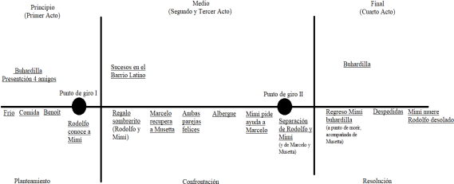

Es un acto de ficción, que representa un Mundo Posible de Tipo II: una ficción realista. Ley de Máximos Semánticos permite reconocer elementos de la realidad: París, Barrio Latino, etc.
Personajes principales, sus relaciones y motivaciones
Los personajes están organizados en parejas con mayor o menor protagonismo. No encontramos una relación de protagonista–antagonista, sino que la acción se desarrolla gracias a las relaciones entre estas parejas de personajes.
Mayor protagonismo:
RODOLFO
+
MIMÍ
MARCELO
+
MUSETTA
SCHAUNARD
+
COLLINE
Menor protagonismo:
ALCINDORO
+
BENOÎT
Siguiendo la tipología actancial de Greimas (1966) podemos crear distintos esquemas de las relaciones y motivaciones que se dan entre los personajes, todo dependiendo de a cuál de ellos consideremos el sujeto de la acción.
DESTINADOR
–––––––––––
OBJETO
–––––––––––
DESTINATARIO
|
AUXILIAR
–––––––––––
SUJETO
–––––––––––
OPONENTE
Enamoramiento, pasión (Rodolfo)
–––––––––––
Amar a Mimí + Sobrevivir
–––––––––––
Rodolfo y Mimí
|
Marcelo, Colline, Schaunard y Musetta
–––––––––––
Rodolfo
–––––––––––
Pobreza y celos (Rodolfo)
Enamoramiento, pasión (Mimí)
–––––––––––
Amar a Rodolfo
–––––––––––
Rodolfo y Mimí
|
Marcelo y Musetta (Colline y Schaunard)
–––––––––––
Mimí
–––––––––––
Pobreza y enfermedad (Mimí)
Análisis de los conflictos de la obra
Propuesta 1
Estado inicial: En la buhardilla, Marcelo, Rodolfo, Schaunard y Colline (pobreza, frío, Benoît).
Fuerza perturbadora: Rodolfo conoce a Mimí, enamoramiento.
Dinámica equilibrante: Rodolfo y Mimí comienzan una relación juntos.
Resolución: La pobreza, los celos y la enfermedad provocan la separación de Mimí y Rodolfo.
Estado final: Mimí muere dejando desolado a Rodolfo.
Propuesta 2

Temas y motivos desarrollados en la obra
Tema del amor pasional.
Motivos: manos entrelazadas, celos, flores. Motivo dentro de la obra: sombrerito rosa.
Tema de la vida bohemia.
Motivos: pobreza, arte, fiesta, París, pasión, buhardilla.
Tema de la pobreza.
Motivos: hambre, frío, enfermedad, muerte, albergue. Motivo dentro de la obra: quema del manuscrito de Rodolfo para calentarse.
Llevan a isotopías léxicas:
Recurrencias léxicas: mano, sombrero, amor, corazón, oscuridad, frío
Campos semánticos: cuerpo, amor, amistad, arte, pobreza.
Para ver las isotopías fonológicas deberíamos acudir a la música, puesto que en el texto no se encuentran.